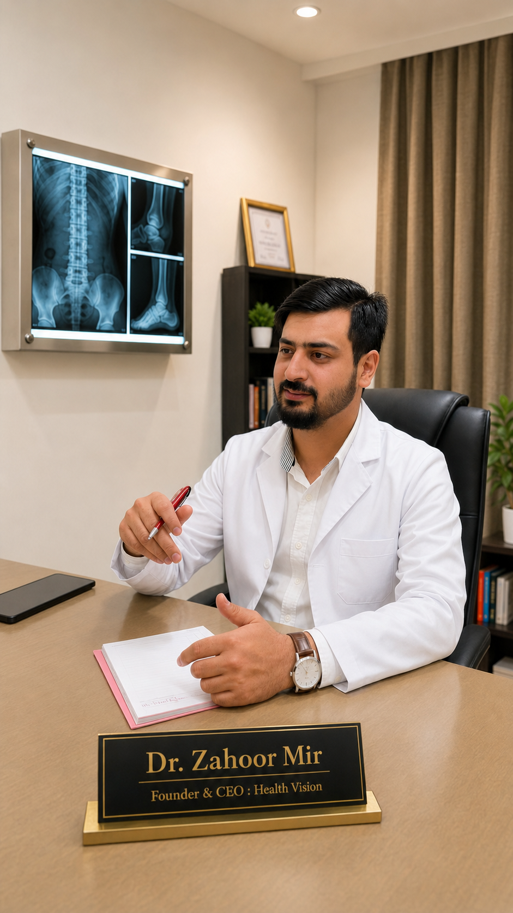

Dr. Zahoor Mir is a highly experienced physiotherapist and rehabilitation specialist dedicated to helping patients recover from pain, injury, orthopedic conditions, neurological conditions especially Stroke Rehabilitation, and post-surgical complications. He is the Founder and CEO of Health Vision Physiotherapy and Rehabilitation, one of the growing physiotherapy and rehabilitation centers in Bangalore. With extensive clinical experience in orthopedic physiotherapy, neuro rehabilitation, sports injury management, and spinal rehabilitation, Dr. Zahoor Mir has successfully treated patients suffering from chronic pain, stroke, paralysis, neck pain, Back pain, knee pain, frozen shoulder, slip disc, and post-operative conditions. Dr. Zahoor Mir has avoided surgeries of number of patients through physiotherapy management.
Patients across Jayanagar, BTM Layout, JP Nagar, Banashankari, Koramangala, Kumaraswamy layout and Bangalore trust Dr. Zahoor Mir because of his patient-focused treatment approach, evidence-based physiotherapy techniques, personalized rehabilitation plans and commitment towards long-term recovery rather than temporary pain relief.
For consultation and physiotherapy appointments, contact Health Vision Physiotherapy and Rehabilitation.
Book Appointment